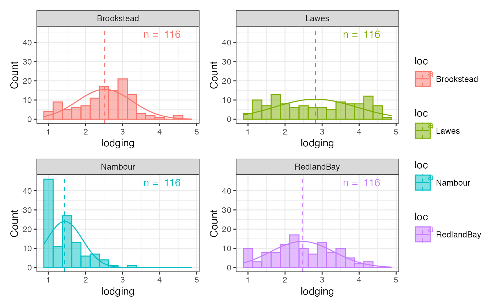
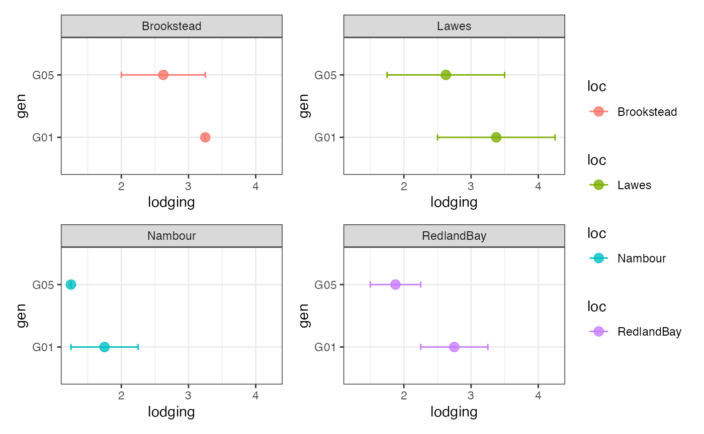
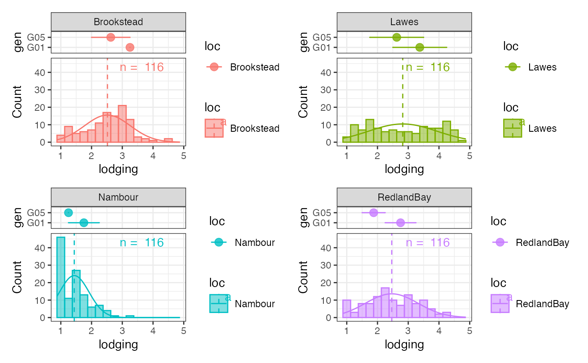

Highlight Genotypes in Group-wise Histograms using Group-wise Point and Error Bar Plots
J. Aravind
2025-10-06
Source:vignettes/articles/Highlight-Checks.Rmd
Highlight-Checks.RmdLoad the required packages.
Prepare the example data from agridat.
soydata <- australia.soybean
clrs <- c("#B2182B", "#2166AC", "#009E53", "#E69F00")
clrs_dark <- colorspace::darken(clrs, amount = 0.2)
checks <- c("G01", "G05")
checkdata <- soydata[soydata$gen %in% checks, ]Plot the basic group-wise histogram
outg_hist_list <-
groupwise_histogram(data = soydata, group = "loc", trait = "lodging",
background.hist = FALSE,
background.density = FALSE,
hist.alpha = 0.5,
density = FALSE,
subset = "list")
wrap_plots(outg_hist_list, nrow = 2, guides = "collect")
Plot the genotypes to highlight as a group-wise point and error bar plots.
outg_list <-
groupwise_dumbell(data = checkdata, group = "loc",
trait = "lodging", genotype = "gen",
subset = "list")
wrap_plots(outg_list, nrow = 2, guides = "collect")
Stack the two plots together using patchwork.
gps <- levels(soydata$loc)
outg_stacked_list <-
lapply(seq_along(gps), function(i) {
top <- outg_list[[i]] +
# Remove xlab
xlab("") +
# Remove x axis ticks and text
theme(axis.ticks.x = element_blank(),
axis.text.x = element_blank())
bottom <- outg_hist_list[[i]] +
# Remove facet strip
theme(strip.background = element_blank(),
strip.text = element_blank())
# Standardize xlim of two plots
xrange <- c(layer_scales(top)$x$range$range,
layer_scales(bottom)$x$range$range)
top <- top + xlim(c(min(xrange), max(xrange)))
bottom <- bottom + xlim(c(min(xrange), max(xrange)))
top / plot_spacer() / bottom +
plot_layout(heights = c(1, -1.7, 4), guides = "collect")
})
#> Scale for x is already present.
#> Adding another scale for x, which will replace the existing scale.
#> Scale for x is already present.
#> Adding another scale for x, which will replace the existing scale.
#> Scale for x is already present.
#> Adding another scale for x, which will replace the existing scale.
#> Scale for x is already present.
#> Adding another scale for x, which will replace the existing scale.
#> Scale for x is already present.
#> Adding another scale for x, which will replace the existing scale.
#> Scale for x is already present.
#> Adding another scale for x, which will replace the existing scale.
#> Scale for x is already present.
#> Adding another scale for x, which will replace the existing scale.
#> Scale for x is already present.
#> Adding another scale for x, which will replace the existing scale.
wrap_plots(outg_stacked_list, nrow = 2, guides = "collect")